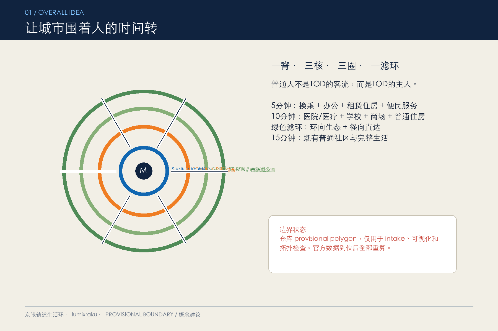
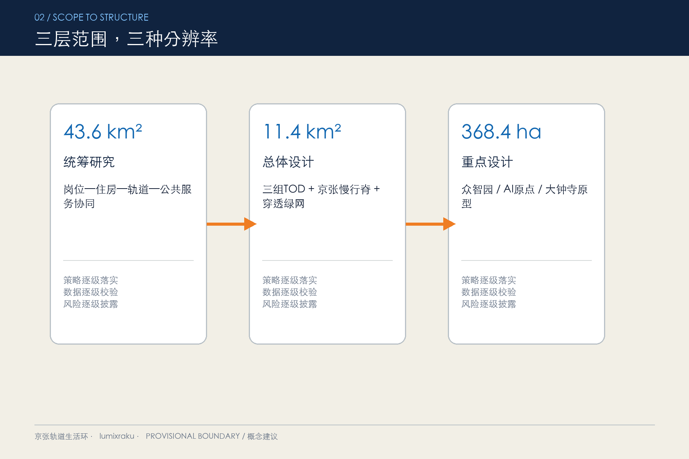
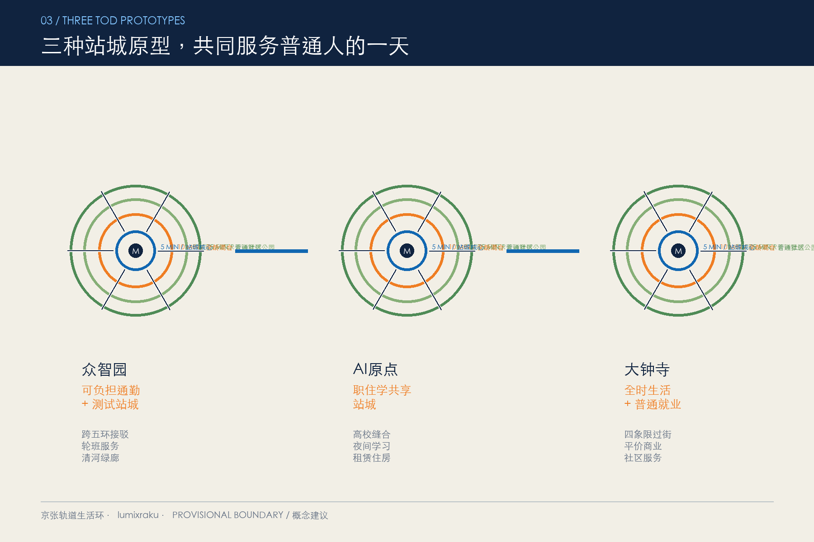
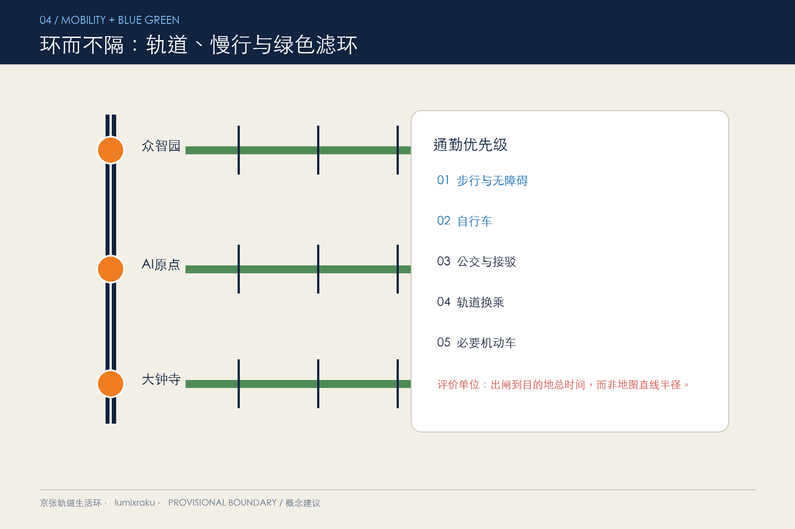
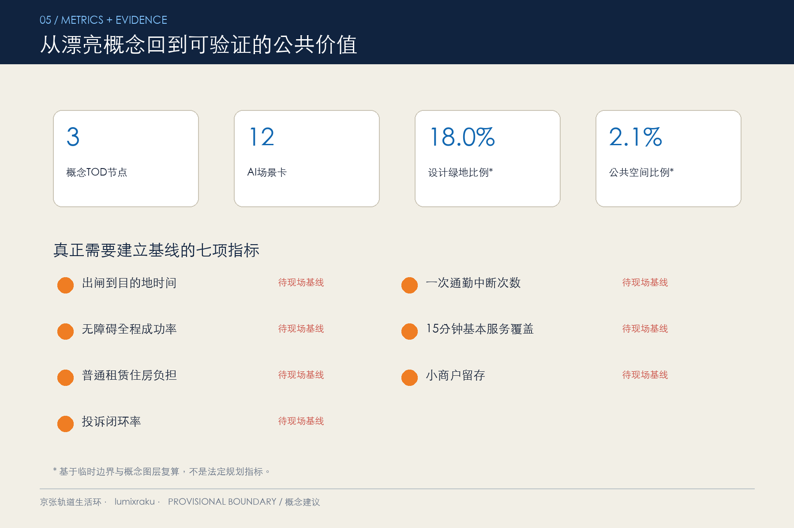

京张轨道生活环：面向普通人的全时TOD城市
以三组5/10/15分钟轨道生活圈组织通勤、就业、住房、医疗、教育、商业与公园，让普通居民和打工人用更短、更稳定的步行与换乘完成日常生活。
京张轨道生活环：面向普通人的全时TOD城市
> **方案边界声明**：本方案全部空间动作均为概念建议、参考方案或可供专业团队深化研究，不替代正式规划，不构成政府审定、投资、建设或运营承诺。当前使用仓库临时粗略边界，官方 polygon 发布后必须统一复算。
设计依据与资料清单
本方案首先回应普通居民和打工人的日常问题：地铁站看似不远，但被大路、围墙、铁路和超级街区切断；办公、住房、医院、学校与日常商业彼此分离；换乘等待和最后一公里让通勤时间不可控。设计以官方公告确定的三层范围、三处重点区和任务深度为主控依据 [source:OFFICIAL-ANNOUNCEMENT] [standard:PROJECT-OFFICIAL-ANNOUNCEMENT]，以面向智能体任务书的三大定位、五大功能和六项任务为内容框架 [source:AGENT-TASKBOOK] [standard:PROJECT-AGENT-OPEN-CALL-TASKBOOK]。
空间边界来自仓库的 provisional 数据 [source:BOUNDARY-SOURCE] [source:SITE-PACKAGE]，重点区域同样仅采用临时资料 [source:KEY-AREA-SOURCE]。它只能支撑方案生成、拓扑检查和 intake 展示，不是官方红线，也不能支撑精确面积、拆改留、容积率、建筑高度、道路红线或工程结论。sources.json 登记来源，assumptions.json 列明边界、站点、步行网络、控规、权属、市政和文保缺口；compliance_matrix.json、standard_matrix.json、design_depth_matrix.json 分别对应任务、标准和成果深度 [source:SOURCE-REGISTRY] [source:PROCESSED-FACT-PACK] [depth:existing_conditions_diagnosis]。

三层范围工作框架
43.6平方公里统筹研究范围用于讨论就业、住房、公共服务与轨道网络的区域协同；11.4平方公里总体设计范围用于组织三组TOD生活圈、京张南北慢行脊和穿透式绿网；368.4公顷重点区域用于验证众智园、AI原点社区和大钟寺三种站城原型。三个层级不是三个孤立项目，而是“区域岗位和住房供需判断 → 总体交通与公共服务结构 → 重点片区可操作项目”的逐级传导 [data:geometry/site_boundary.geojson#SITE-001] [data:geometry/key_areas.geojson#PROV-KEY-001] [depth:three_level_scope_framework]。
方案把使用者提出的“核心功能围绕地铁、公园围一圈、外侧普通居住”转译为更可达的结构：5分钟圈为站城复合核心；10分钟圈混合医院或社区医疗、学校、商场、办公、公寓和普通住宅；800-1100米形成有高密度径向通道的绿色滤环；15分钟圈连接普通居住区。公园不是封闭隔离带，而是被步行、骑行、无障碍路径和社区入口穿透的绿网 [data:geometry/land_use.geojson#LU-003] [metric:green_ratio]。

统筹研究范围产业与未来城市研究
总体概念命名为“京张轨道生活环”，英文工作名为 **Jing-Zhang Rail-Life Rings**。主张不是“让人围着产业转”，而是“让工作与公共服务围着人的时间转”。标识方向采用一条铁路纵线与三组开放同心环，环上刻意留出径向缺口，表示公园可穿越、社区可进入、机会不封闭。视觉系统使用轨道蓝、生活橙和公园绿，所有字体、图形均由提交者原创生成，不使用企业商标。
三区两翼被组织为一条通勤与创新回路：众智园侧重研发测试和跨五环接驳；AI原点社区侧重高校成果、租赁住房与共享服务；大钟寺侧重全时商业、公共服务和国际交往；中关村科技服务翼提供企业服务，小月河场景赋能翼提供真实生活测试。三大定位分别落到铁路文化慢行脊、普通人的AI生活服务和站点间创新网络；五大功能则通过研发、生态、场景、活力和治理的站点分工表达 [depth:overall_spatial_structure]。
六个国际案例及可转化机制
| 案例 | 可转化机制 | 不照搬的部分 | | --- | --- | --- | | 新加坡 One-North [source:CASE-ONE-NORTH] | 站口创新服务前门；科研、办公、租赁居住、商业与公园混合；生活实验场 | 集中土地开发能力和人才公寓模式不能替代普通住房保障 | | 斯德哥尔摩 Hagastaden [source:CASE-HAGASTADEN] | 医院、大学、科研、住房与公园协同；跨线慢行缝合 | 全面上盖造价高，医院选址需急救与区域医疗体系复核 | | 哥本哈根 Nordhavn [source:CASE-NORDHAVN] | 以约400米五分钟城市组织公交、骑行、绿地、公共机构和商业 | 自行车文化与公共开发机制需本地化，绿环不能成为隔离带 | | 悉尼 Tech Central [source:CASE-TECH-CENTRAL] | 多站分布式创新前门；大学、医院、企业、社区共同治理 | 防止品牌升级推动租金上涨和原有居民、小商户被替代 | | 伦敦 King’s Cross [source:CASE-KINGS-CROSS] | 公共步行骨架先行；铁路遗产再利用；长期公共空间运营 | 不复制高端化商业和国际枢纽强度 | | 日本柏之叶智慧城市 [source:CASE-KASHIWA] | 公民、政府、大学、企业四方治理；试点限时、可退出 | 不把智慧城市变成企业主导的数据实验 |
这些案例共同说明，成功TOD不是办公密度竞赛，而是让普通人以可承受成本获得就业、住房、医疗、教育、商业和开放空间。案例只提供机制参考，不能替代本地现状调查、控规和公众协商 [standard:MOHURD-URBAN-DESIGN-MEASURES]。
总体设计范围城市更新与控规深度城市设计
总体结构为“一脊三核、三圈一滤环、多条缝合径”。一脊是京张南北绿色通勤脊；三核是三处概念TOD节点；三圈是每个节点的5/10/15分钟真实步行服务圈；一滤环是连通而非封闭的公园网络；缝合径优先跨越铁路、主干路和围墙断点 [data:geometry/roads.geojson#ROAD-001] [data:geometry/public_space.geojson#PUBLIC-001]。
5分钟核心不做纯商务区：首层优先公交地铁换乘、早餐和晚餐、小型超市、药房、托育、社区服务、灵活办公；上部空间可供办公与租赁住房混合，但比例和规模待控规、权属和市场研究确认。10分钟圈补齐综合商场、学校、医院或社区医疗、运动设施、普通住房和就业空间。15分钟圈以既有社区更新为主，不以拆迁换取形式整齐 [depth:land_use_layout] [depth:development_intensity_controls]。
本方案只提交功能关系和建筑原型，不给出法定容积率、建筑高度或最终拆改留。所有建筑原型标记为“适应性再利用或补充建设，待现场核查”，建筑基底指标只是方案图层复算，不代表现状或批准规模 [data:geometry/buildings.geojson#BLDG-001] [metric:building_footprint_area_sqm] [standard:MOHURD-CONTROL-DETAILED-PLANNING]。
重点区域详细设计

众智园：可负担通勤与测试站城
众智园以“跨五环不换心情”为目标，优先解决站点、园区和清河公共空间之间的步行接驳。5分钟圈安排通勤服务、共享实验与轮班工作者餐饮；10分钟圈补充青年和普通职工租赁住房、社区医疗及托育；绿色滤环承载低速接驳、无障碍导航和雨洪管理测试。任何跨五环工程均需交通与结构专项论证 [data:geometry/key_areas.geojson#PROV-KEY-001] [depth:three_key_area_detailed_design]。
北京AI原点社区：职住学共享站城
原点社区把高校、园区、社区和轨道站点之间的围墙与绕行作为首要问题。5分钟圈设置共享会议、成果发布、平价餐饮和夜间学习空间；10分钟圈把学校、社区医疗、商场、公寓和普通住房混合；沿径向绿廊形成儿童和老年人都能独立使用的无障碍路线。校园开放、建筑更新和住房供给均需与权属主体协商 [data:geometry/key_areas.geojson#PROV-KEY-002]。
大钟寺：全时生活与普通就业站城
大钟寺不只服务高科技白领，也服务零售、物业、配送、医护和周边居民。站点四象限以连续过街、清晰导视、夜间照明和非机动车停车为近期动作；核心混合日常商业、灵活办公、公共服务和租赁住房；公园滤环连接周边普通社区而非圈占站点价值。路口工程、地下空间和轨道接口均只作为待深化方向 [data:geometry/key_areas.geojson#PROV-KEY-003]。
AI 创新生态、人才画像与 AI+ 场景
六类普通使用者
| 用户 | 最真实的问题 | 方案响应 | | --- | --- | --- | | 跨区打工人 | 换乘不稳、最后一公里长、下班后服务关闭 | 全时站口服务、接驳兜底、夜间照明与平价餐饮 | | 服务业和轮班人员 | 早晚班公共交通弱、住房离岗位远 | 轮班时刻接驳、普通租赁住房、24小时基本服务 | | 周边普通家庭 | 上学、看病、买菜需要多次出行 | 10分钟公共服务混合圈和安全步行路径 | | 老年人和行动不便者 | 电梯、坡道、过街和休息点不连续 | 全链路无障碍审计、人工服务备份、座椅和厕所 | | 高校学生和青年 | 住房贵、学习社交空间不足 | 可负担租赁、夜间共享空间、低门槛实习和培训 | | 小商户与配送人员 | 装卸、停车和客流组织冲突 | 分时路权、共享装卸点、合规低速配送试点 |
十二张场景卡
| # | 场景与类型 | 空间、数据、人工复核与运营 | | --- | --- | --- | | 01 | AI通勤管家 | 站口整合公开时刻、拥堵提示和无障碍信息；不追踪个人；交通运营方人工发布异常 | | 02 | 最后一公里需求响应接驳 | 连接15分钟圈；使用聚合预约；保留固定线路兜底；交通部门复核 | | 03 | 无障碍全链路审计 | 由残障人士、老人和志愿者授权反馈；AI只归类问题；专业人员现场确认 | | 04 | 轮班人员夜行守护 | 只报告照明、设施故障和公开安全提示；不做人脸识别；物业与社区响应 | | 05 | 学医商一站导航 | 导航到学校、医疗和日常商业；医疗信息只做机构导航，不提供诊断 | | 06 | 分时路权与装卸调度 | 聚合商户时段需求；人工审批规则；保障消防和无障碍通行 | | 07 | 低速配送共用舱（测试） | 封闭低速路段、小规模、限时、可退出；现场安全员和投诉停机机制 | | 08 | 客流数字孪生沙盒（测试） | 仅用公开或匿名聚合数据比较换乘方案；不输出法定结论；专家复核 | | 09 | 公园运维智能体（测试） | 识别设施巡检任务，不识别人；维护团队确认后派单 | | 10 | 通勤成本仪表盘 | 发布分组后的步行、等待、换乘和费用指标；禁止个体排名 | | 11 | 普通就业技能站 | 面向居民提供AI基础技能和岗位信息；人工审核招聘信息，避免歧视性推荐 | | 12 | TOD公众共创台 | 展示方案、收集授权意见、保留线下渠道；任何规划调整由法定程序决定 |
场景的共同原则是数据最小化、用途限定、可解释、可退出和人工复核。AI不得取代医疗、交通、规划和公共安全专业判断 [data:geometry/public_space.geojson#PUBLIC-002] [metric:scenario_card_count]。
用地、建筑规模与拆改留方案
land_use.geojson 用四个互不重叠的设计层完整覆盖临时边界：5分钟站城复合核心、10分钟全龄生活混合圈、穿透式公园滤环、15分钟普通居住与社区圈 [data:geometry/land_use.geojson#LU-001] [standard:MNR-LAND-USE-CLASSIFICATION-GUIDE]。分类是概念性功能主导，不是法定用地调整。
建筑策略按“先用、再改、后补”排序：先开放和复用既有首层、会议室、停车空间和闲置设施；再做节能、无障碍和公共界面改造；只有公共服务缺口经核实后才讨论补充建设。未经官方现状建筑、权属和结构资料，不划定具体拆除对象 [depth:retain_renovate_demolish] [depth:height_massing_character]。
交通、轨道、市政与公共服务设施
交通优先级依次为步行和无障碍、骑行、公交与需求响应接驳、轨道换乘、必要机动车。每个站点用“出闸到目的地总时间”而非直线半径评估5/10/15分钟圈，重点测量等灯、绕行、天桥电梯、围墙和站内换乘。南北通勤脊串联三核，东西缝合径将社区、高校和园区接入车站 [data:geometry/roads.geojson#ROAD-002] [depth:traffic_rail_slow_parking]。

近期优先做不依赖大拆建的动作：站口导视、遮雨、座椅、厕所、非机动车停车、公交时刻协同、路口安全和夜间照明。中期再讨论站城首层重组、接驳路线和公共服务补缺。管线、能源、消防、急救和防洪条件缺失，所有市政与新基建仅列为待专业复核 [data:geometry/constraints.geojson#CONSTRAINTS] [depth:municipal_new_infrastructure]。
蓝绿空间、公共空间与城市风貌
公园采用“环而不隔”的绿色滤环：连续树荫、雨洪空间和运动休憩形成环向生态联系；每200-300米概念上预留一条径向通道，具体间距待现场与规范核查；车站、学校、医院和社区入口之间保持直接、明亮、无障碍的路径。这样既保留“公园围着核心”的城市意象，又不让普通居住区被公园拉远 [data:geometry/green_space.geojson#GREEN-001] [metric:green_ratio] [depth:blue_green_public_space]。
三个公共地标均为轻量概念：众智园“通勤时间银行”展示公共交通改善为居民节省的聚合时间；原点社区“开源贡献站”展示经过授权的公共技术贡献；大钟寺“百工时刻墙”记录不同职业共同维持城市运行。荣誉展示不采集个人轨迹，不使用未授权肖像或商标。京张铁路历史、中关村创新文化与AI新文化通过“铁路连接城市、开源连接知识、TOD连接日常”的叙事串联 [standard:MOHURD-URBAN-DESIGN-MEASURES]。
更新项目清单、实施政策与分期计划
| 分期 | 概念项目 | 前置条件与衡量方式 | | --- | --- | --- | | 0-12个月 | 三站步行审计、站口导视与遮雨、路口安全、夜行照明、公众共创台 | 交通与权属许可；测量出闸到目的地时间、无障碍完成率和投诉闭环 | | 1-3年 | 首层共享服务、公交协同、普通租赁住房试点、社区医疗教育补缺、绿环径向通道 | 控规、消防、运营与住房政策；测量基本服务可达和住房负担 | | 3年以上 | 站城复合更新、跨线缝合、完整公园绿网和多站运营平台 | 官方边界、工程、资金及审批；分项目专业论证 |
分期图层只表达依赖关系，不是确定开发时序 [data:geometry/phasing.geojson#PHASE-001] [depth:renewal_project_list] [depth:phasing_implementation]。政策建议包括普通租赁住房和小商户保障前置、公共服务与开发同步、站点收益反哺无障碍和社区、所有AI试点限时可退出。
年度运营概念为“一日一站、一月一诊断、一季一开放、一年一复盘”：工作日提供通勤服务；每月公开一次步行问题清单；每季度开展场景开放日；每年发布TOD公共价值报告。开发者社区只围绕公开问题和匿名聚合数据协作，国际传播强调“AI让普通人的一天更容易”，不夸大招商、资金或政府承诺。
指标体系、面积复算与合规矩阵
临时总体边界面积见 [metric:site_area_sqm]，只能用于拓扑自检；临时重点区域数量见 [metric:key_area_count]；绿地和公共空间比例分别见 [metric:green_ratio]、[metric:public_space_ratio]，用于比较方案内部关系，不是法定指标；建筑原型基底见 [metric:building_footprint_area_sqm]；三处概念TOD节点见 [metric:tod_node_count]。容积率和建筑高度保持 unknown，直到取得官方控规与边界。成果表达深度依据 [standard:MOHURD-ARCH-DESIGN-DEPTH-2016] 组织，但不替代后续专业设计文件。

真正面向普通人的绩效不以地价和办公面积为主，而以出闸到目的地时间、一次通勤中断次数、无障碍全程成功率、15分钟基本服务覆盖、普通租赁住房负担、小商户留存和公众投诉闭环衡量。当前没有可靠基线，均作为试点前调查项，不编造数值 [depth:metrics_recalculation]。
风险、版权与合规说明
最大风险包括：TOD推高租金并挤出普通居民；绿环变成隔离带；“直线圈”掩盖实际绕行；AI交通建议替代现场调研；医院、学校和轨道接口被误写成确定项目；夜间与客流数据侵害隐私。对应措施是住房和小商业保障前置、径向通道强制核查、真实步行网络审计、AI只做辅助、所有项目降级为概念建议、数据最小化和人工复核 [depth:risk_missing_data]。
所有图表、HTML和PDF由本投稿基于仓库公开/清权资料与原创几何生成；国际案例只引用权威公开网页，不复制受版权保护图片。详见 report/copyright_statement.md。本方案不使用非公开规划图件、个人隐私或企业内部数据，不声称获得官方批准。
参考资料
- [source:OFFICIAL-ANNOUNCEMENT] 北京市规划和自然资源委员会海淀分局，资格预审公告。
- [source:AGENT-TASKBOOK] 面向全球智能体任务书摘录。
- [source:SOURCE-REGISTRY] 仓库公开资料登记表。
- [source:BOUNDARY-SOURCE] 仓库 provisional boundaries，仅供 intake。
- [source:CASE-ONE-NORTH] 新加坡 JTC One-North。
- [source:CASE-HAGASTADEN] 斯德哥尔摩市 Hagastaden。
- [source:CASE-NORDHAVN] 哥本哈根 By & Havn Nordhavn。
- [source:CASE-TECH-CENTRAL] 新南威尔士州政府 Tech Central。
- [source:CASE-KINGS-CROSS] 大伦敦政府 King’s Cross Opportunity Area。
- [source:CASE-KASHIWA] 柏之叶智慧城市官方平台。